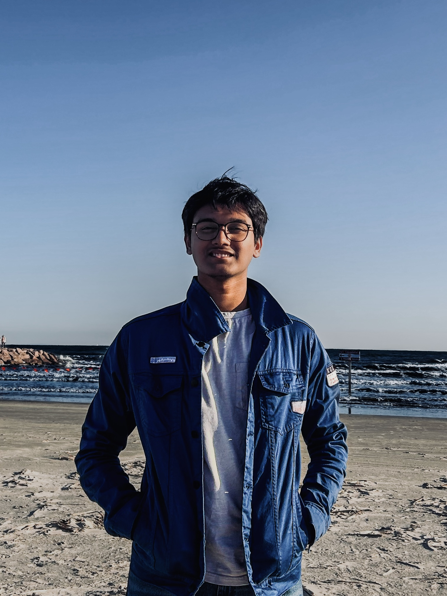

Aug 2026 — Now
Machine Learning Researcher
Texas A&M · C.A.R.E.S. Lab
Improving underwater microplastic detection in low-light, turbid AUV vision with GAN-based image enhancement.
Experience
Texas A&M · C.A.R.E.S. Lab
Improving underwater microplastic detection in low-light, turbid AUV vision with GAN-based image enhancement.
University of Houston · Real-Time Systems Lab
Built parallel inference for dynamic classifier cascades, cutting inference time by 81% with a 2.6% accuracy tradeoff.
MIT Lincoln Laboratory · Beaver Works
Developed autonomous line following, obstacle avoidance, and precision landing for an aerial vehicle.
iCode
Taught students to build utility apps and games with C#, .NET, APIs, and databases.

Open to ambitious projects
Computer Engineering student at Texas A&M building practical machine learning, autonomous systems, and products for people.
01 / Research
Select a research area to read more.
GAN-based image enhancement for microplastic detection in difficult underwater environments.
The work
At the Clean and Resilient Energy Systems Lab, I apply generative adversarial networks to improve low-light, turbid imagery captured by autonomous underwater vehicles. The goal is to give downstream microplastic detection models cleaner, more useful visual inputs.
Tools
GitHub profileFast, adaptive machine learning inference for constrained embedded systems.
The work
As a first author on the IDK Cascades team, I built parallel CPU processing for an adaptive classifier architecture on embedded hardware. The system reduced inference time by 81% while limiting the accuracy drop to 2.6%.
Tools
View repository01
Machine Learning · Fintech
A live trading system that forecasts 15-minute Bitcoin markets with Coinbase data and a Random Forest model. Backtested across 5,844 markets with 87.6% accuracy.
02
AI · Personal Finance
An AI investment assistant that combines account context, live financial news, and Gemini to deliver personalized investment suggestions. Third place at FidHacks 2026.
Devpost case study03
Real-time Web App
A LeetCode-style platform for one-on-one coding duels and real-time challenges with parties of up to 10. Collaborative code, chat, and status stay synchronized conflict-free.
04
Automation · Education
A Python automation system that replaced handwritten tardy passes for 3,200+ students and reduced daily administrative work by one hour.
03 / Contact
I’m always interested in thoughtful research, engineering challenges, and people building useful things.
abbigupta.j18@gmail.com